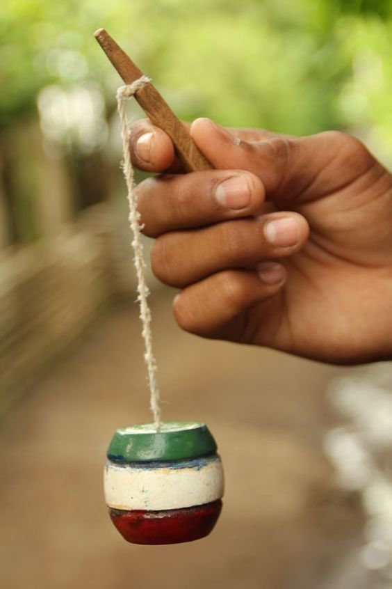

El balero, también conocido como "bilmbo", "coca" o "trompo chino", es un juguete tradicional formado por un mango de madera con un eje puntiagudo y una bola o barril hueco con un orificio en el centro. El objetivo es ensartar la bola en el eje mediante un movimiento de balanceo.
Se sostiene el mango del balero con una mano y se sujeta la bola con la otra. Se le da un suave impulso hacia arriba con la muñeca para que la bola se eleve, y se intenta ensartarla en el eje cuando cae.
El movimiento es una combinación de balanceo y cálculo de la inercia: si impulsas demasiado fuerte, la bola pasa de largo; si es muy suave, no alcanza a subir. Se necesita práctica para encontrar el punto exacto.
Existen varias formas de jugar: "al hilo" (ensartar y dejar la bola en el eje), "a la copa" (recibirla en la base ancha), "a la chueca" (ensartarla de lado) y "al capirucho" (hacerla girar alrededor del eje). Gana quien complete más variantes sin fallar.
👥 Jugadores: De 1 a 4 participantes. Es principalmente un juego individual o de reto.
⏱️ Duración: Cada intento dura segundos. Una sesión completa, 15-30 minutos.
🎯 Objetivo: Ensartar la bola en el eje la mayor cantidad de veces o completar todas las variantes.
🧰 Materiales: Un balero de madera con su bola correspondiente.
• Movimiento suave: No impulses con fuerza, el balero se controla con la muñeca.
• Mira el eje: Fija la vista en la punta del eje, no en la bola.
• Flexiona las rodillas: Al recibir la bola, baja ligeramente para amortiguar el impacto.
Haz clic en la bola para lanzarla. ¡Ensártala en el eje!